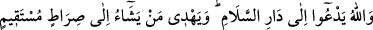
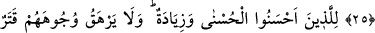
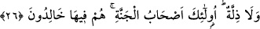

ALLAH
SELAM YURDUNA
ÇAĞIRIR
25. Allah, esenlik yurduna çağırır ve dilediğini doğru bir yola iletir.
26. Güzel amel işleyenlere, daha güzel karşılık ve fazlası var. Onların yüzlerine
ne bir kara bulaşır, ne de horluk. İşte onlar, cennet ehlidirler. Orada ebedî
kalacaklardır.
“Allah” bütün insanları Rasûlullah (s.a.)’in lisânıyla; söz, fiil ve hal bakımından
O’na tâbi olan kâmil vârislerinin lisânıyla başı ağlama, ortası cefâ, sonu ise fenâ olan
bir yurttan “esenlik yurduna” yani her türlü kötülük ve âfetten kurtuluş yurduna; başı
ihsan, ortası rızâ; sonu da Hakk’a kavuşma; yani lika olan cennete “çağırır.”
Allah ismi, zât-ı ahadiyyet’in ismidir. Tüm ilâhî isim ve sıfatları kendisinde toplar. Bu
sebepledir ki bazıları hakîkat âlemine girmek için bu lâfzı vesile edinir.
Bir adam Şiblî (k.s.)’a: “Neden “Lâ ilâhe illallah” değil de “Allah” diye
zikrediyorsun?” diye sordu. Şiblî: “Lâ ilâhe/hiçbir ilah yoktur” derken Hak’tan uzak bir
şekilde ruhumun alınmasından korkuyorum.” diye cevap verdi.
Anlatılır ki: Geçmiş ümmetlerden birisinin hükümdarı çok güzel bir şehir inşa edip
şehri süslemiş. Şehrin güzelliği ve süsü konusunda hiçbir masraftan kaçınmamış. Sonra
bir yemek yaptırıp insanları davet etmiş.
Şehrin giriş-çıkış kapılarına da şehirden çıkan herkese “Şehirde bir kusur gördünüz
mü?” diye soracak adamlar yerleştirmiş. Onlar sordukça herkes “Hayır” diyormuş.
Sonunda üzerlerinde değişik elbiseler bulunan bir grup gelmiş. Onlara da “Şehirde bir
kusur gördünüz mü?” diye sormuşlar.
Onlar da “İki kusur gördük” demişler. Bunun üzerine o iki kişiyi tutup hükümdara
getirmişler ve onların söylediklerini anlatmışlar. Bunun üzerine hükümdar: “Ben bir
kusura bile razı değilim. Onları huzuruma getirin.” demiş.
Görevliler bu adamları huzura getirince hükümdar bu iki kusurun ne olduğunu sormuş.
Onlar: